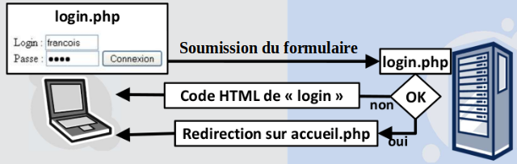
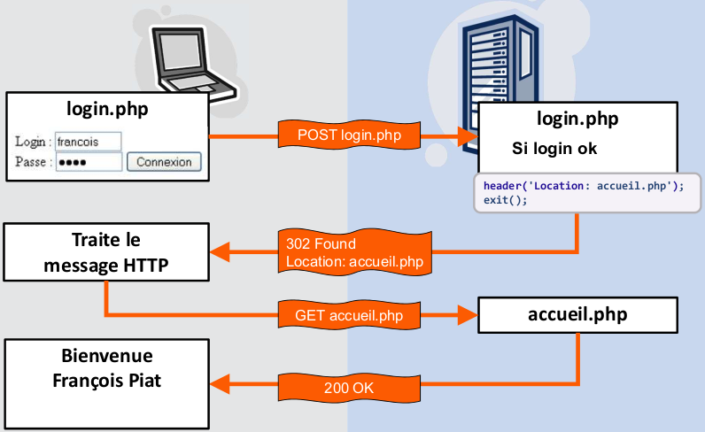

La redirection de page est souvent utilisée dans le développement pour résoudre des cas spécifiques de traitement. Dans un script PHP, effectuer une redirection consiste à demander au navigateur d'appeler un autre script (ou une autre page).
On se place dans le cas d'un script login.php qui, lorsqu'il est appelé une première fois via une requête HTTP GET, renvoie le code HTML d'un formulaire de connexion.
La figure suivante représente ce que l'on souhaite réaliser lors de la soumission du formulaire.

Lorsque l'utilisateur clique sur le bouton connexion, le script login.php est rappelé (on est dans le cas d'une auto-soumission) :
PHP fournit la fonction header()
pour générer des en-têtes HTTP et les envoyer au client. L'en-tête
qui gére les redirections s'appelle Location
et doit avoir comme valeur l'URL de la page sur laquelle on redirige le
navigateur. Par exemple :
Location:
test_divers/accueil.html
va rediriger le navigateur sur la page
accueil.html située dans le répertoire test_divers.
On reprend notre exemple : si l'utilisateur envoie un login et un mot de passe valides, la soumission du formulaire de connexion entrâine l'échange des messages HTTP suivants :

On simplifie le formulaire HTML, et on suppose qu'il suffit de saisir le login "Piat" pour réussir à s'authentifier :
Notez que l'appel de la fonction header() dans le cas spécifique d'une redirection DOIT être suivi immédiatement de l'arrêt du script avec exit. Si ce n'est pas le cas, le suite du script s'exécutera normalement, avec par exemple toutes les mises à jour éventuelles de la base de données.
Il est particulièrement important de comprendre que l'exécution de l'instruction header('Location: accueil.php'); n'arrête pas le script, mais envoie "simplement" un en-tête HTTP, tout en fixant le code de statut de la réponse.
Suivant la façon dont est configuré PHP, le script suivant peut ne pas s'exécuter correctement et provoquer l'erreur Cannot modify header information - headers already sent.
L'affichage éventuel de ce message d'erreur vient de la façon dont sont construits les messages HTTP : les en-têtes doivent se trouver au début du message et pas dans le corps du message, constitué des sorties d'affichage (i.e. echo ou print) que fait le script.
Pour éviter ce problème, il y a 3 solutions :